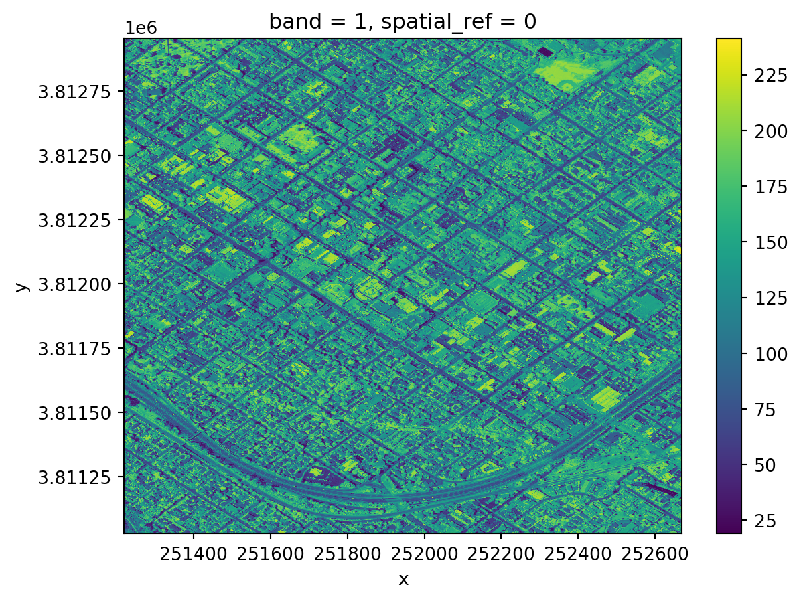
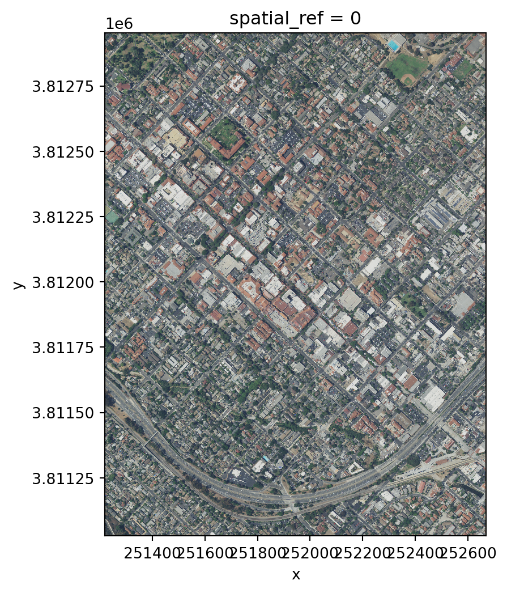
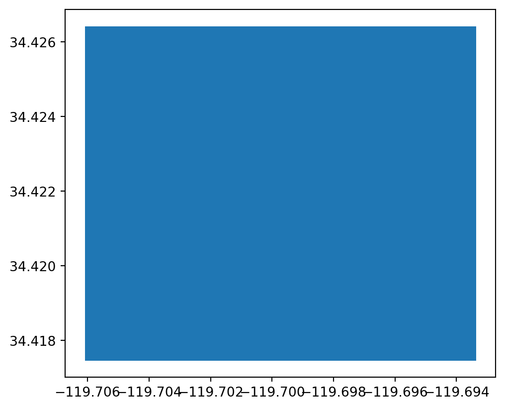
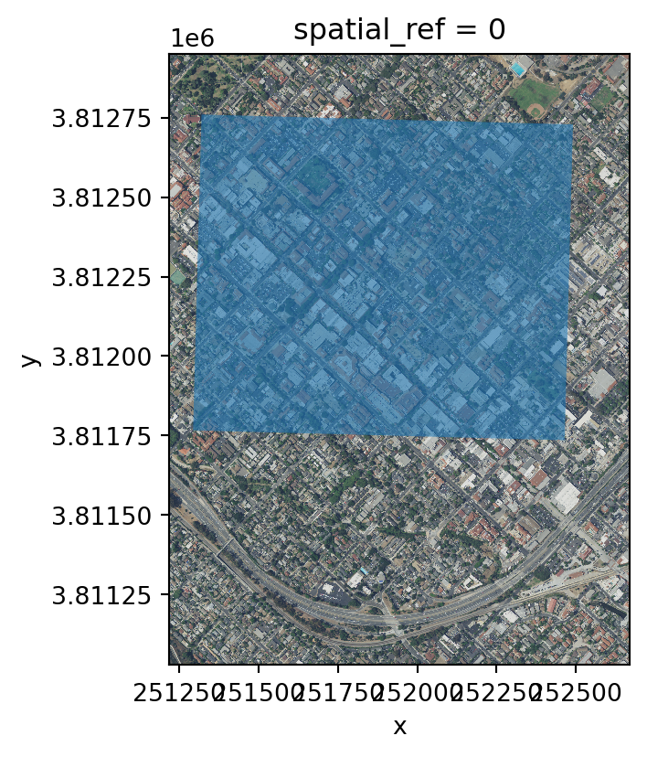
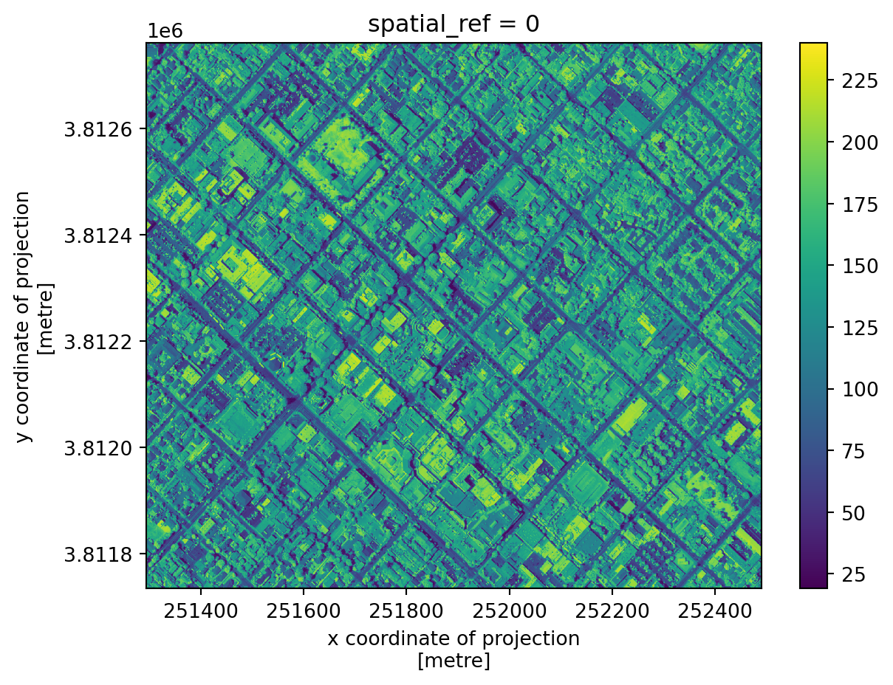
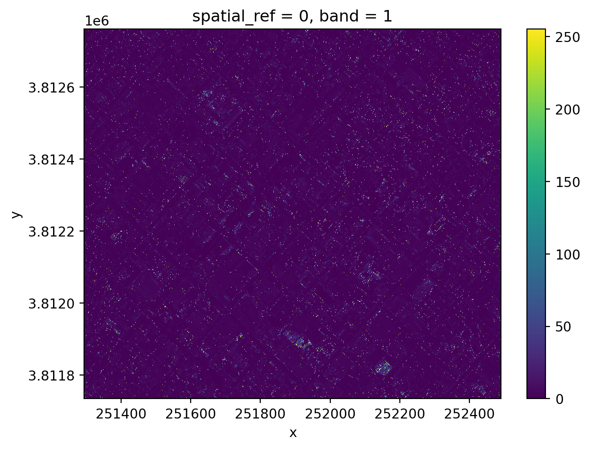
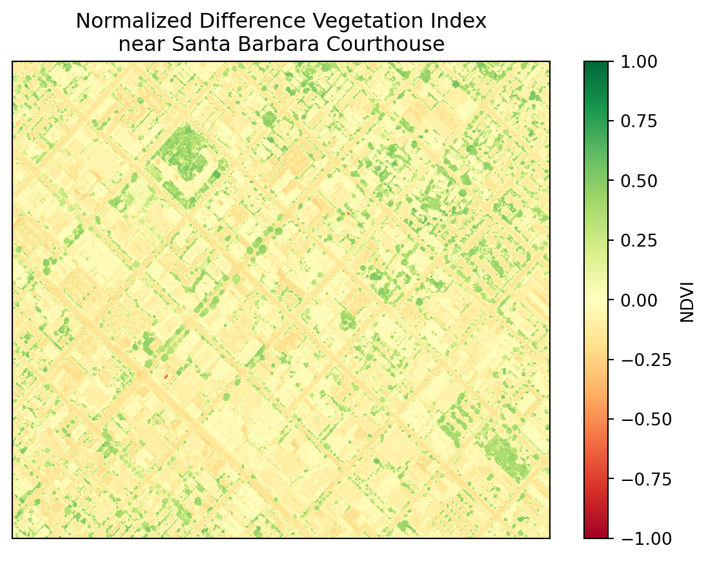

import os
import numpy as np
import matplotlib.pyplot as plt
import geopandas as gpd
import rioxarray as rioxr14 rioxarray
In this lesson we will introduce rioxarray, a Python extension for xarray to manipulate xarray.DataArrays as rasters. The name rioxarray stands for raster input/output + xarray.
We will use the rioxarray’s rio accessor to obtain raster information from an xarray.DataArray and do some raster manipulations (calculate NDVI).
About the data
The raster files we will use today come from the US National Agriculture Imagery Program (NAIP). NAIP images are are high-resolution aerial images with four spectral bands: red (R), green (G), blue (B) and near-infrared (NIR). The raster’s we’ll use today are from 2020.
The data used in this lesson was pre-processing from a complete NAIP scene to separate the RGB bands from the NIR band and reduce the spatial extent. The data was accessed through Microsoft’s Planetary Computer NAIP data repository.
Import a TIF file
Let’s start by loading the libraries we will use:
There are multiple ways of opening a TIF file using xarray or rioxarray. Using the rioxarray.open_rasterio() function to open the TIF file is a simple way to import the raster file as an xarray.DataArray and make sure all our geospatial data gets loaded correctly:
# Import NIR TIF file
fp = os.path.join('data','NAIP_SB_nir.tif')
nir = rioxr.open_rasterio(fp)
nir<xarray.DataArray (band: 1, y: 3208, x: 2419)>
[7760152 values with dtype=uint8]
Coordinates:
* band (band) int64 1
* x (x) float64 2.512e+05 2.512e+05 ... 2.527e+05 2.527e+05
* y (y) float64 3.813e+06 3.813e+06 ... 3.811e+06 3.811e+06
spatial_ref int64 0
Attributes:
AREA_OR_POINT: Area
scale_factor: 1.0
add_offset: 0.0Notice we see all the components of an xarray.DataArray: its dimensions (band, y, x), the coordiantes for each dimension, and some attributes. We can also directly access some of these attribues:
print('Shape: ', nir.shape)
print('Data type: ', nir.dtype, '\n')Shape: (1, 3208, 2419)
Data type: uint8
Using the .values attribute we can retrieve the underlying numpy.array holding the values of the variable:
print(type(nir.values))
nir.values<class 'numpy.ndarray'>array([[[167, 164, 161, ..., 147, 152, 151],
[170, 170, 168, ..., 151, 149, 154],
[176, 177, 177, ..., 151, 151, 151],
...,
[ 94, 88, 101, ..., 83, 88, 79],
[108, 95, 103, ..., 92, 91, 75],
[ 94, 90, 104, ..., 87, 88, 82]]], dtype=uint8)We can also plot our data:
nir.plot()
Notice the coordinates on the x and y axes.
This map shows the light captured in the near-infrared spectrum by a sensor on a plane. Can you guess where this? If you guessed Santa Barbara downtown, you guessed right!
Drop a dimension
Notice that our raster has an unnecessary extra dimension: band.
print("Sizes of dimensions:", dict(nir.sizes))Sizes of dimensions: {'band': 1, 'y': 3208, 'x': 2419}This is making this xarray.DataArray three-dimensional when it is not needed. We can “squeeze this dimension” of length 1 by:
using the
squeeze()method. If we don’t pass any parameters, thensqueeze()gets rid of all dimensions with length one, and thengetting rid of the associated coordinates for this dimension. We can do this using the
xarray.DataArraydrop()method and specifying the name of the coordinates we want to remove, in this case ‘band’.
Let’s do this:
# Original dimensions and coordinates
print(nir.dims, nir.coords,'\n')
# Remove length 1 dimension (band)
nir = nir.squeeze()
print(nir.dims, nir.coords,'\n')
# Remove coordinates associated to band
nir = nir.drop('band')
print(nir.dims, nir.coords)('band', 'y', 'x') Coordinates:
* band (band) int64 1
* x (x) float64 2.512e+05 2.512e+05 ... 2.527e+05 2.527e+05
* y (y) float64 3.813e+06 3.813e+06 ... 3.811e+06 3.811e+06
spatial_ref int64 0
('y', 'x') Coordinates:
band int64 1
* x (x) float64 2.512e+05 2.512e+05 ... 2.527e+05 2.527e+05
* y (y) float64 3.813e+06 3.813e+06 ... 3.811e+06 3.811e+06
spatial_ref int64 0
('y', 'x') Coordinates:
* x (x) float64 2.512e+05 2.512e+05 ... 2.527e+05 2.527e+05
* y (y) float64 3.813e+06 3.813e+06 ... 3.811e+06 3.811e+06
spatial_ref int64 0rio accessor
Remember an accessor in Python let’s us access a different set of properties of an object. We have previously used accesors like .str and .dt in pandas to work with strings and dates. In this lesson, we will use the .rio accessor for an xarray.DataArray to access its raster properties. For example, we can access the number of bands, height, width, spatial bounding box, and CRS:
# Examine raster attributes using rio accessor
print('Number of bands: ', nir.rio.count)
print('Height: ', nir.rio.height)
print('Width: ', nir.rio.width, '\n')
print('Spatial bounding box: ')
print(nir.rio.bounds(), '\n')
print('CRS: ', nir.rio.crs)Number of bands: 1
Height: 3208
Width: 2419
Spatial bounding box:
(251218.8, 3811027.2, 252670.19999999998, 3812952.0)
CRS: EPSG:26911Multi-band raster
Let’s now import the RGB raster:
# Import RGB raster
fp = os.path.join('data','NAIP_SB_rgb.tif')
rgb = rioxr.open_rasterio(fp)
rgb<xarray.DataArray (band: 3, y: 3208, x: 2419)>
[23280456 values with dtype=uint8]
Coordinates:
* band (band) int64 1 2 3
* x (x) float64 2.512e+05 2.512e+05 ... 2.527e+05 2.527e+05
* y (y) float64 3.813e+06 3.813e+06 ... 3.811e+06 3.811e+06
spatial_ref int64 0
Attributes:
AREA_OR_POINT: Area
scale_factor: 1.0
add_offset: 0.0Notice this raster has three bands, instead of one. This makes sense because we know these bands correspond to the red, green and blue bands of the image.
Check-in
Obtain the following information about the RGB raster: shape, number of bands, data type of its values and CRS.
Finally, let’s plot this raster. Since it has three bands, we can plot it as an image using the .plot.imshow() method, which will interpret the three bands of the object as RGB.
# Plot three bands as RGB image
rgb_aspect_ratio = rgb.rio.width / rgb.rio.height # Raster's aspect ratio
rgb.plot.imshow(size=6, # Plot's height in inches
aspect=rgb_aspect_ratio # Ratio of width/height
)
Clip a raster
Our area of interest (AOI) for this lesson is a smaller region that includes only a few blocks around the NCEAS building. This is outlined in a GeoJSON file:
fp = os.path.join('data', 'SB_aoi.geojson')
aoi = gpd.read_file(fp)
aoi.plot()
Remember: if two geospatial sets will interact they need to be in the same CRS. In our case, the AOI geopandas.GeoDataFrame does not have the same CRS as the rasters:
# Examine CRss
print('aoi CRS: ', aoi.crs)
print('nir CRS: ', nir.rio.crs)
print('rgb CRS: ', rgb.rio.crs)aoi CRS: EPSG:4326
nir CRS: EPSG:26911
rgb CRS: EPSG:26911So let’s reproject:
# Reproject AOI to RGB CRS
aoi = aoi.to_crs(rgb.rio.crs)
print('Matched CRS?', aoi.crs == rgb.rio.crs)Matched CRS? TrueAnd plot them together:
# Plot of RGB raster with AOI overlay
fig, ax = plt.subplots(figsize=(6, 6 * rgb_aspect_ratio)) # Directly set size and aspect
rgb.plot.imshow(ax=ax)
aoi.plot(ax=ax, alpha=0.6)
plt.show()
To clip the raster using the AOI polygon we use the .rio.clip_box() method:
# Clip rasters to AOI
rgb_small = rgb.rio.clip_box(*aoi.total_bounds)
nir_small = nir.rio.clip_box(*aoi.total_bounds)Notice a few things:
- we had to use the
.rioaccessor to access theclip_box()method - similarly to the
shapely.box()function we’ve used previously,.rio.clip_box()usual parameters areminx,miny,maxx,maxy. We are using the*asterisk as an unpacking operator to get these from the listaoi.total_bounds.
Let’s check our clipped data:
# Examine clipped data
print('Original shape: ', nir.shape)
print('Clipped shape: ', nir_small.shape)
nir_small.plot()Original shape: (3208, 2419)
Clipped shape: (1710, 1995)
Check-in
Examine the same updates for the RGB data.
Raster math
We often want perform calculations on rasters to create a new output raster, commonly known as “raster math”.
In our case, we are interested in computing the Normalized Difference Vegetation Index (NDVI) over our AOI. The NDVI is an index commonly used to check if an area has live green vegetation or not.
According to the Earth Observing System
The results of the NDVI calculation range from -1 to 1. Negative values correspond to areas with water surfaces, manmade structures, rocks, clouds, snow; bare soil usually falls within 0.1-0.2 range; and plants will always have positive values between 0.2 and 1. Healthy, dense vegetation canopy should be above 0.5, and sparse vegetation will most likely fall within 0.2 to 0.5.
The NDVI is calculated using the NIR and red bands. The formula is
\(NDVI = \frac{NIR - Red}{NIR + Red}.\)
First, let’s select the red band:
# Select dimension by name and coordinate by label
red = rgb_small.sel(band=1)
red<xarray.DataArray (y: 1710, x: 1995)>
[3411450 values with dtype=uint8]
Coordinates:
band int64 1
* x (x) float64 2.513e+05 2.513e+05 ... 2.525e+05 2.525e+05
* y (y) float64 3.813e+06 3.813e+06 ... 3.812e+06 3.812e+06
spatial_ref int64 0
Attributes:
AREA_OR_POINT: Area
scale_factor: 1.0
add_offset: 0.0We can perform raster calculations using the same arithmetic we use for numpy.arrays (because, underneath it all, that’s what they are). So our NDVI calculation is as follows:
ndvi = (nir - red)/(nir + red)
ndvi.plot()
Do these results look as expected?
Data type issues
The uint8 (8-bit unsigned integer) is a very small data type that only holds integers from 0 up to 255. In particular, calculations don’t return what what we are used to when working with intgers (they’re done module 256):
np.uint8(150) + np.uint8(150)/var/folders/gm/chd1kps96_g7xdxyfw150wm80000gp/T/ipykernel_2983/1890984988.py:1: RuntimeWarning: overflow encountered in scalar add
np.uint8(150) + np.uint8(150)44In the NDVI formula we have to add NIR + Red. If both NIR and Red are very close to 255, when we add them, the calculation overflows the uint8 data type and we don’t get the expected results.
Avoid silent failures: ALWAYS verify your results!
Notice that when we performed the NDVI calculation we did not get any warning, although we were overflowing the computation at every cell of our array. This is can be an example of what is referred as silent failure in programming, where we don’t get any warnings about the errors or unexpected behavior in our computation. That’s why it’s so important to double-check our results!
Updating data types
To be able to perform the calculation successfully, we will need to udpate the data type of our rasters into int16, which will be big enough to hold all the numbers that appear in the calculations:
# Update data type to int16 to perform NDVI calculation
red16 = red.astype('int16')
nir16 = nir_small.astype('int16')
print('RED: original dtype:', rgb_small.dtype, '.... converted dtype:', red16.dtype)
print('NIR: original dtype:', nir.dtype, '.... converted dtype:', nir16.dtype)
# Calculate NDVI
ndvi = (nir16 - red16)/(nir16+red16)
# Plot
fig, ax = plt.subplots() # Adjust figure size
ndvi.plot(
ax=ax,
cmap="RdYlGn", # Colormap for NDVI
vmin=-1, # Minimum value
vmax=1, # Maximum value
cbar_kwargs={"label": "NDVI"} # Label for color bar
)
ax.set_title("Normalized Difference Vegetation Index\nnear Santa Barbara Courthouse") # Add title
# Remove axes ticks
ax.set_xticks([])
ax.set_yticks([])
# Remove axes labels
ax.set_xlabel("")
ax.set_ylabel("")
plt.show()RED: original dtype: uint8 .... converted dtype: int16
NIR: original dtype: uint8 .... converted dtype: int16
Remember that plants will always have positive NDVI values between 0.2 and 1. Can you spot the Santa Barbara Courthouse?